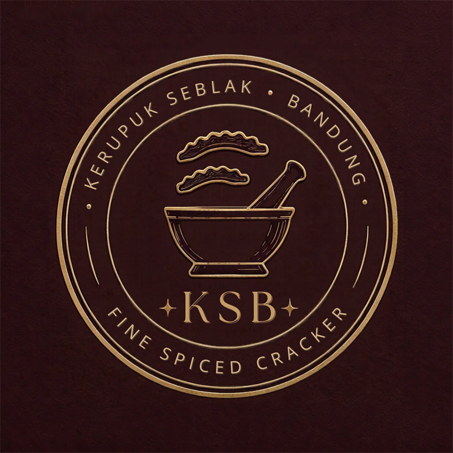

Pilih & racik
Tandai jenis kerupuk, pilih berat 100/200/300 g, lalu pilih Signature atau atur sendiri takaran 10 bumbu.

KERUPUK SEBLAKBANDUNG PREMIUMPilih kerupuk favoritmu, tentukan berat dan rasa. Kami racik dengan aroma cikur dan rempah Bandung, lalu antar ke depan rumah.

Pilih satu atau beberapa jenis tanpa batas. Berat yang kamu pilih akan dibagi rata otomatis ke semua jenis terpilih.
Pilih resep Signature yang sudah ditakar, atau racik sendiri dengan memilih bumbu dan jumlah sendok per 100 g.
Harga bertambah sesuai berat. Campuran kerupuk dibagi rata.
Signature berisi resep lengkap. Racik sendiri untuk pilih beberapa bumbu dan takaran sendoknya.
Ongkir Rp10.000; gratis jika subtotal produk mencapai Rp70.000. Tidak ada minimum belanja.
Open PO dibuat pada hari kamu memesan. Jika antrean tidak padat, pengantaran paling cepat besok. Jika pesanan ramai, jadwal bergeser satu hari dan ditampilkan saat checkout.
 Foto rujukan · Ruswandi1971 · CC BY-SA 4.0
Foto rujukan · Ruswandi1971 · CC BY-SA 4.0Saya memulai usaha ini sebagai mahasiswa dengan harapan sederhana: belajar hidup mandiri dan membangun sesuatu dari usaha sendiri. Orang tua sudah lama bekerja keras untuk keluarga. Saya ingin, perlahan, menjadi bagian dari alasan mereka bisa menikmati hasil jerih payahnya dengan lebih tenang.
Kerupuk Seblak Bandung Premium adalah langkah kecil menuju cita-cita itu. Setiap pesanan bukan hanya membantu usaha ini belajar dan berkembang, tetapi juga mengingatkan saya untuk bekerja jujur, menjaga mutu, dan tidak menyerah pada proses.
“Semoga dari satu pouch kecil, tumbuh kemandirian yang bisa dibagi kepada orang-orang yang paling berjasa.”
Menjadi usaha camilan mahasiswa yang mandiri, dipercaya karena rasa dan kualitasnya, serta tumbuh dengan memberi manfaat bagi pelanggan dan keluarga.
Boleh pesan langsung tanpa akun. Akun pelanggan menyimpan alamat dan riwayat pesanan.
Tandai jenis kerupuk, pilih berat 100/200/300 g, lalu pilih Signature atau atur sendiri takaran 10 bumbu.
Ongkir tetap Rp10.000 untuk semua jarak, gratis jika subtotal produk mencapai Rp70.000.
Scan QRIS, kirim bukti bayar, lalu cek pesanan dan cetak struk kapan saja.
Bebas pilih dari 9 jenis. Berat dibagi rata otomatis di antara jenis yang dipilih.
Signature berisi enam resep rekomendasi owner dengan daftar bumbu dan takaran lengkap. Racik sendiri memungkinkan pelanggan mencentang bumbu yang diinginkan dan memilih jumlah sendoknya.
Takaran ditampilkan untuk setiap 100 g. Jika memilih 200 g atau 300 g, jumlah racikan per bungkus menyesuaikan berat.
Ongkir tetap Rp10.000 untuk semua jarak dan gratis jika subtotal produk mencapai Rp70.000. Tidak ada minimum belanja.
Pesanan dibuat sebagai Open PO pada hari pemesanan. Pengiriman paling cepat besok; jika kuota harian padat, estimasi menjadi lusa.
Tidak. Checkout tamu tetap bisa. Daftar dengan nomor WhatsApp dan PIN untuk menyimpan alamat dan riwayat pesanan.
Belum semua. Foto yang tersedia merupakan foto rujukan jenis kerupuk. Ganti dengan foto produk asli saat stok produk siap agar pelanggan melihat tampilan yang tepat.